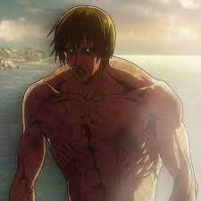

Attack on Titan Wiki
Titã de Ataque
O Titã de Ataque (進 撃 の 巨人 Shingeki no Kyojin) é um dos Nove Titãs que lutou pela liberdade através das gerações. Atualmente está na posse de Eren Yeager.
Titã de Ataque: Eren Yeager
História
O Titã de Ataque, como todos os Nove Titãs, foi trazido ao mundo após a morte de Ymir Fritz. Embora este Titã foi presumivelmente preso no conflito de casas entre os oito Titãs do Império Eldiano subservientes ao Titã Fundador, é dito que o Titã de Ataque sempre lutou pela liberdade de Eldia, não importa o dia e a idade. Durante a Grande Guerra dos Titãs, enquanto Marley gradualmente ganhava controle sobre sete dos Nove Titãs, o Titã de Ataque, evidentemente, nunca caiu nas mãos de Marley e permaneceu no continente enquanto o Titã Fundador permaneceu no exterior, na Ilha de Paradis, onde o Primeiro Rei Reiss mudou a capital de Eldia.
No ano de 819, um espião Eldiano da Segurança Pública de Marley chamado Eren Kruger herdou o Titã de Ataque de um predecessor desconhecido. Durante os treze anos em que portou o Titã de Ataque, não se sabe quantas vezes ele o usou e se o usou, até o ano 832, quando ele trouxe Grisha Yeager para a Ilha Paradis. Na fronteira, depois que os Restauracionistas foram transformados em Titãs Puros e enviados para vagar pela ilha, Kruger fez uso do Titã de Ataque para destruir a Segurança Pública e seu navio antes de descartar todas as evidências do evento. Depois disso, Kruger confiou a Grisha a missão de obter o Titã Fundador do Rei das Muralhas e passou a posse de seu Titã para Grisha.
Ao herdar o Titã de Ataque de Kruger, Grisha usou seu Titã para se dirigir ao norte em direção às Muralhas, onde foi encontrado pelo soldado Keith Shadis da Divisão de Reconhecimento. Após sua chegada no distrito de Shiganshina, não se sabe quantas vezes Grisha fez uso de seu Titã de Ataque.
- 
| Titã de Ataque: Eren Kruger | Titã de Ataque: Grisha Yeager |
Portadores
Atual
Eren Yeager

Anteriores (mortos)
Eren Kruger
Grisha Yeager